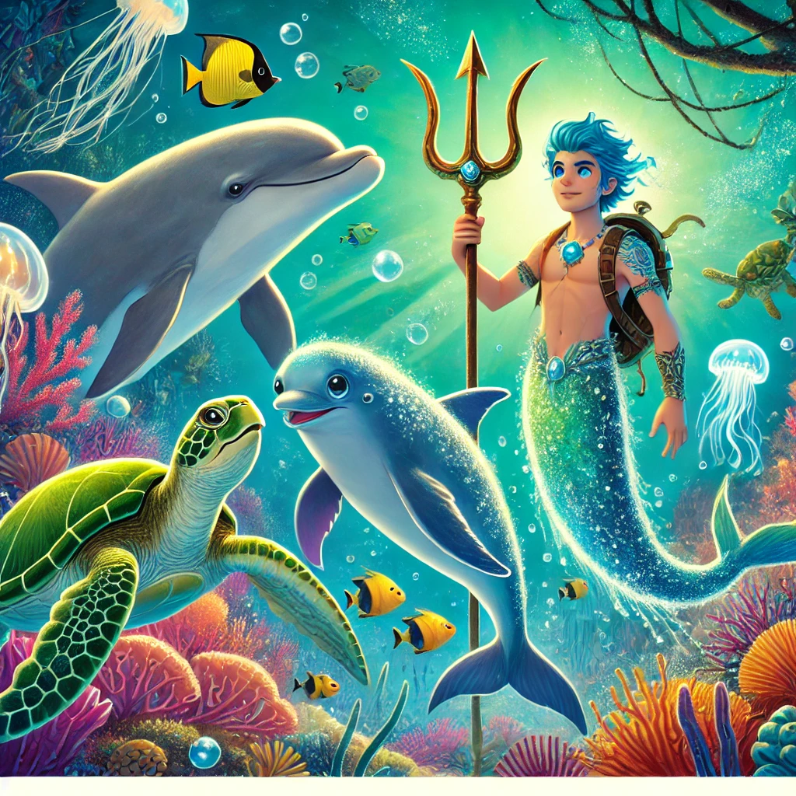

El Guardián del Océano

Había una vez, en un vasto océano azul, un joven tritón llamado Tritón. Tritón era conocido en todo el reino submarino por su valentía y su deseo de explorar los lugares más profundos y misteriosos del mar. Aunque vivía en un hermoso palacio de coral junto a su familia, Tritón soñaba con descubrir tesoros ocultos y conocer criaturas mágicas de las que solo había oído hablar en historias.
Un día, mientras nadaba cerca de un antiguo naufragio, Tritón encontró un mapa dorado escondido en un cofre oxidado. El mapa mostraba el camino hacia un lugar legendario llamado la Cueva de las Maravillas, un lugar donde se decía que se escondían los tesoros más increíbles del océano. Sin pensarlo dos veces, Tritón decidió seguir el mapa y emprender una gran aventura.
Con su tridente en mano y su corazón lleno de emoción, Tritón nadó por corrientes profundas y atravesó arrecifes de coral, siguiendo las pistas del mapa. En su viaje, conoció a muchos amigos que lo ayudaron en su misión: un delfín juguetón que le mostró los caminos más rápidos, una tortuga sabia que le contó historias antiguas sobre la cueva y una medusa luminosa que le iluminó el camino en las aguas más oscuras.
Después de muchos días de viaje, Tritón finalmente llegó a la entrada de la Cueva de las Maravillas. La entrada estaba custodiada por una gran barrera de rocas y algas, pero con su valentía y la ayuda de sus nuevos amigos, Tritón logró abrirse paso y entrar en la cueva.
Dentro, la cueva brillaba con la luz de miles de perlas y gemas preciosas que cubrían las paredes. En el centro de la cueva, Tritón encontró un cofre dorado que contenía un tridente antiguo y mágico, que se decía que tenía el poder de controlar las mareas y las corrientes del océano. Tritón, con gran respeto, tomó el tridente y sintió su poder fluir a través de él.
Con el tridente en su poder, Tritón decidió usarlo para proteger su hogar y ayudar a los habitantes del océano. Regresó al palacio de coral, donde fue recibido con alegría y admiración por todos. Tritón se convirtió en un gran protector del mar, usando su nuevo poder para mantener el equilibrio y la paz en el reino submarino.
Y así, el joven tritón que soñaba con aventuras encontró su verdadero propósito y vivió feliz, explorando los misterios del océano y cuidando de todos los seres que habitaban en sus profundidades.
Y colorín colorado, este cuento se ha acabado. Buenas noches, Alondra. ¡Dulces sueños!